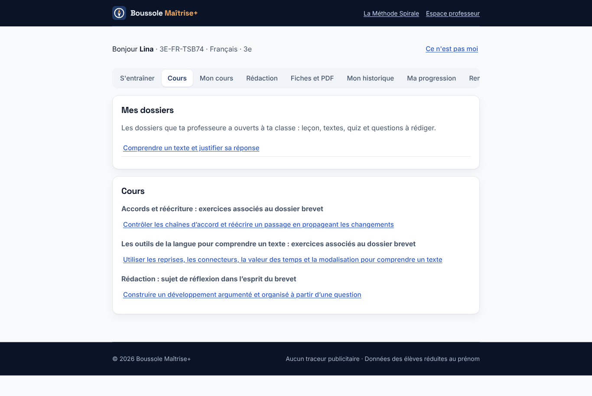
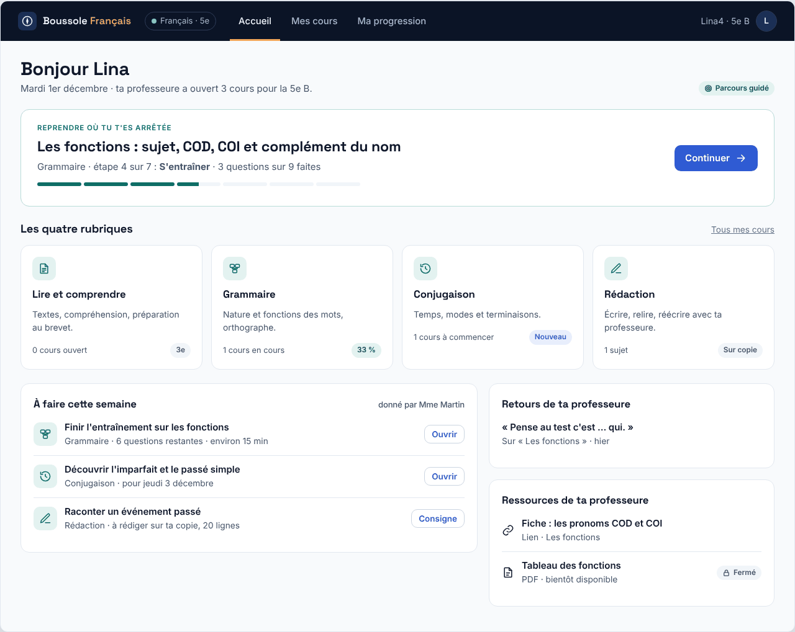
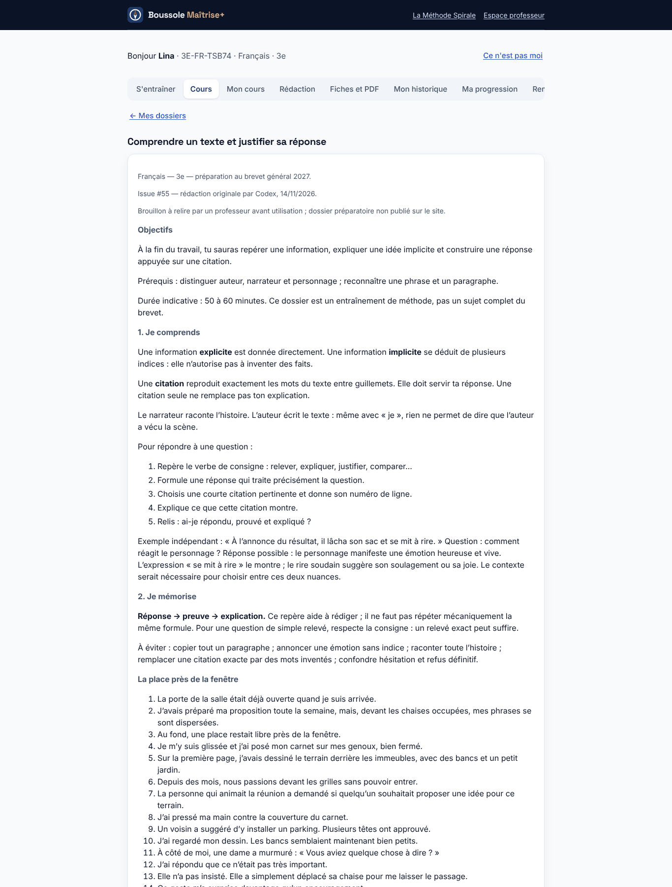
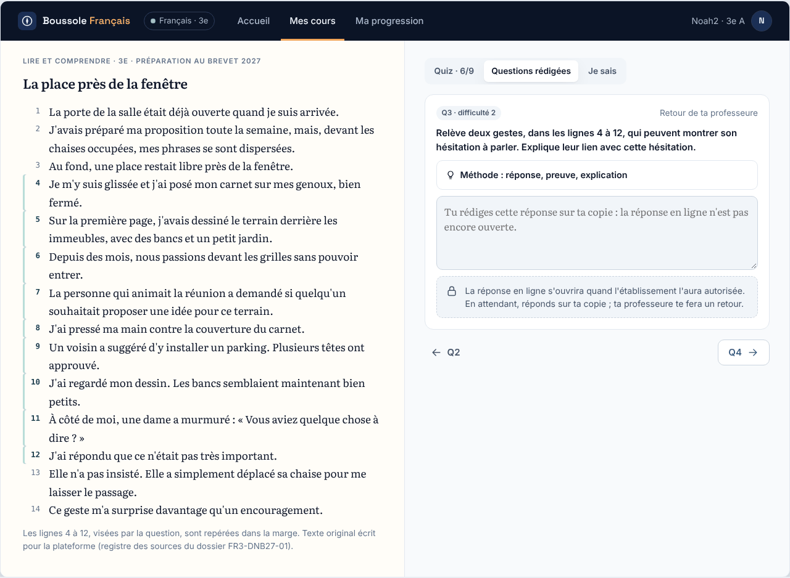
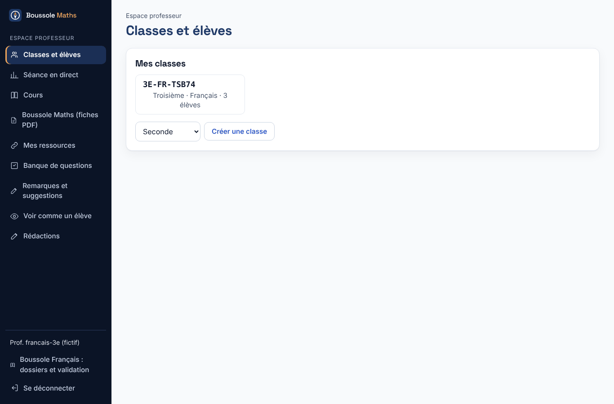
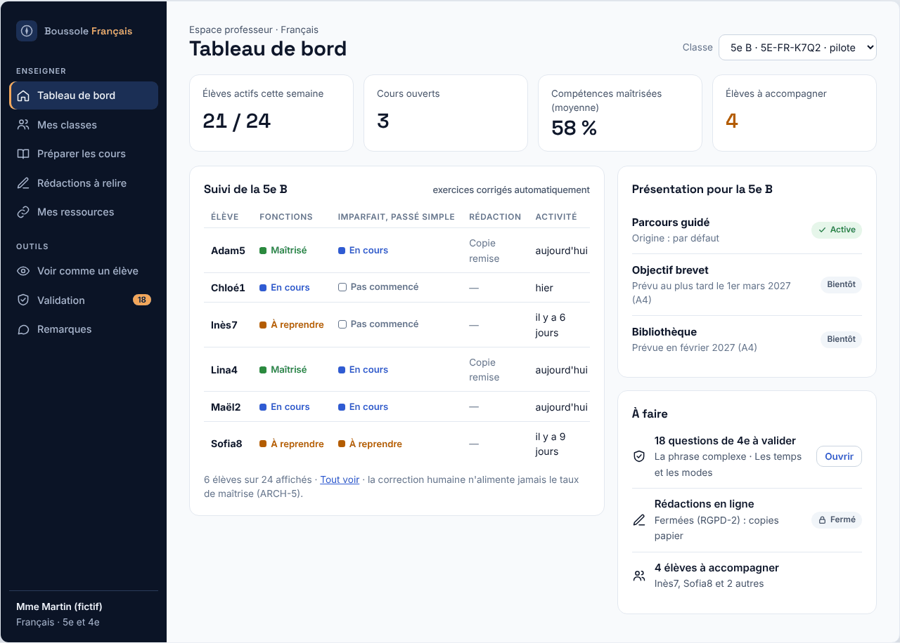

GrammaireEn cours
Les fonctions : sujet, COD, COI et complément du nom
Identifier le sujet, le COD et le COI ; distinguer un COI d'un complément du nom introduits par « de ».
3 × 45 min · 9 questionsReprendre
Issue #231 · refonte de l'interface Français · à valider par le propriétaire
Maquettes haute fidélité, navigables. Données d'utilisateurs fictives ; textes, questions et corrigés tirés des huit cours de #177. Le même écran s'affiche en version ordinateur ou mobile.
Mardi 1er décembre · ta professeure a ouvert 3 cours pour la 5e B.
Reprendre où tu t'es arrêtée
Grammaire · étape 4 sur 7 : S'entraîner · 3 questions sur 9 faites
Les cours ouverts par ta professeure. Leçons, entraînements et dossiers se présentent de la même façon.
Identifier le sujet, le COD et le COI ; distinguer un COI d'un complément du nom introduits par « de ».
Conjuguer à l'imparfait et au passé simple ; choisir le temps selon sa valeur dans un récit.
Raconter un événement inventé : le décor à l'imparfait, les actions au passé simple, des connecteurs.
Identifier la classe grammaticale d'un mot dans une phrase ; distinguer classe et fonction.
Conjuguer au présent les verbes des 1er et 2e groupes et les verbes fréquents du 3e groupe.
Étape 2 · Comprendre · environ 15 min
Dans « Le récit de son voyage passionne la classe » :
Dans « Il parle de son voyage », le même groupe complète cette fois le verbe « parle » : c'est un COI (il en parle).
| Fonction | Ce qu'elle complète | Préposition | Pronom possible |
|---|---|---|---|
| COD | le verbe | non | le, la, les |
| COI | le verbe | oui (à, de) | lui, leur, en, y |
| Complément du nom | un nom | le plus souvent | remplacé avec son nom |
Méthode · distinguer un COI d'un complément du nom
Exemple résolu. « Elle se souvient de ses vacances » → elle s'en souvient → COI.
La correction s'affiche après ta réponse. Tu peux revenir à la leçon sans perdre ta question.
Lire et comprendre · 3e · préparation au brevet 2027
Les lignes 4 à 12, visées par la question, sont repérées dans la marge. Texte original écrit pour la plateforme (registre des sources du dossier FR3-DNB27-01).
Relève deux gestes, dans les lignes 4 à 12, qui peuvent montrer son hésitation à parler. Explique leur lien avec cette hésitation.
Formule ta réponse, cite le texte entre guillemets avec le numéro de ligne, puis explique ce que la citation montre.
Tu as répondu A) COI. La bonne réponse est B) complément du nom.
Le récit de son voyage passionne la classe.
Méthode : chercher le mot complété par le groupe
Erreur fréquente
Répondre « COI » à cause de la préposition « de ». Un COI complète le verbe : « Il parle de son voyage » → il en parle.
Calculée à partir des exercices corrigés automatiquement. Les rédactions relues par ta professeure n'entrent pas dans ce calcul.
Bilan · étape 7 · Consolider
À retenir
Sujet : « c'est … qui ». COD : complète le verbe sans préposition. COI : complète le verbe avec à ou de. Complément du nom : complète un nom et disparaît avec lui quand on le remplace par un pronom.
Rédaction · 5e · environ 55 minutes
Consigne
Raconte un événement inventé, à l'imparfait et au passé simple. Installe d'abord le décor, puis fais surgir l'événement avec un connecteur comme « soudain ». Environ 20 lignes.
Sujet fictif : n'écris ni adresse, ni nom de famille, ni information personnelle.
Espace professeur · Français
| Élève | Fonctions | Imparfait, passé simple | Rédaction | Activité |
|---|---|---|---|---|
| Adam5 | Maîtrisé | En cours | Copie remise | aujourd'hui |
| Chloé1 | En cours | Pas commencé | — | hier |
| Inès7 | À reprendre | Pas commencé | — | il y a 6 jours |
| Lina4 | Maîtrisé | En cours | Copie remise | aujourd'hui |
| Maël2 | En cours | En cours | — | aujourd'hui |
| Sofia8 | À reprendre | À reprendre | — | il y a 9 jours |
6 élèves sur 24 affichés · Tout voir · la correction humaine n'alimente jamais le taux de maîtrise (ARCH-5).
Origine : par défaut
Prévu au plus tard le 1er mars 2027 (A4)
Prévue en février 2027 (A4)
Validation pédagogique · Français 4e et 3e
Vous ne pouvez pas valider un contenu dont vous êtes l'autrice (V2-D15). Toute décision est journalisée.
Aperçu élève
Comment sont reliées les propositions de cette phrase ?
Il pleut ; nous restons à la maison.
Corrigé · jamais montré à l'élève avant sa réponse
Réponse : A. Les deux propositions sont séparées par un point-virgule, sans mot de liaison : c'est une juxtaposition.
Administration · Matières
Activation, contenus, classes pilotes et fonctions sensibles. Les règles de sécurité et de validation ne se modifient pas ici.
| Niveau | Cours | Rubrique | Validation | Ouvert à |
|---|---|---|---|---|
| 6e | La nature des mots | Grammaire | 0 / 9 | — |
| 6e | Le présent de l'indicatif | Conjugaison | 0 / 9 | — |
| 5e | Les fonctions | Grammaire | 0 / 9 | — |
| 5e | L'imparfait et le passé simple | Conjugaison | 0 / 9 | — |
| 4e | La phrase complexe | Grammaire | En cours | — |
| 4e | Les temps et les modes | Conjugaison | En cours | — |
| 3e | Accords et réécriture | Grammaire | 9 / 9 | 3e A |
| 3e | Comprendre un texte | Lire et comprendre | Dossier v1 | 3e A |
Valeurs fictives pour la maquette. Un cours n'est servi qu'après validation par une personne différente de l'auteur, et seulement aux classes pilotes (SEC-D6).
Actif pour l'équipe et les classes pilotes, fermé au public
Non : ouverture sur décision du propriétaire
PKP_REDACTION_ACTIVE · RGPD-2
PKP_PDF_FRANCAIS_OUVERT · A5
Ces réglages se changent dans la configuration du serveur, sur décision du propriétaire. L'interface les affiche sans permettre de les modifier.
Lina4 · 5e B · Français
Un bilan des exercices et des retours de sa professeure. Les textes rédigés par Lina ne sont pas affichés ici.





